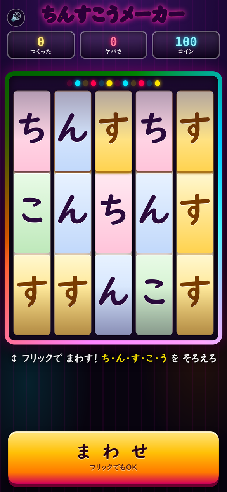
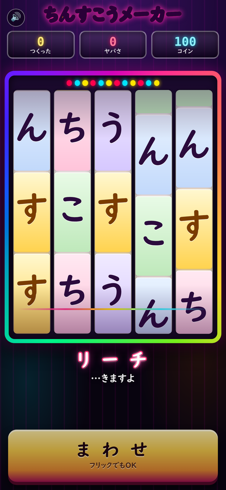
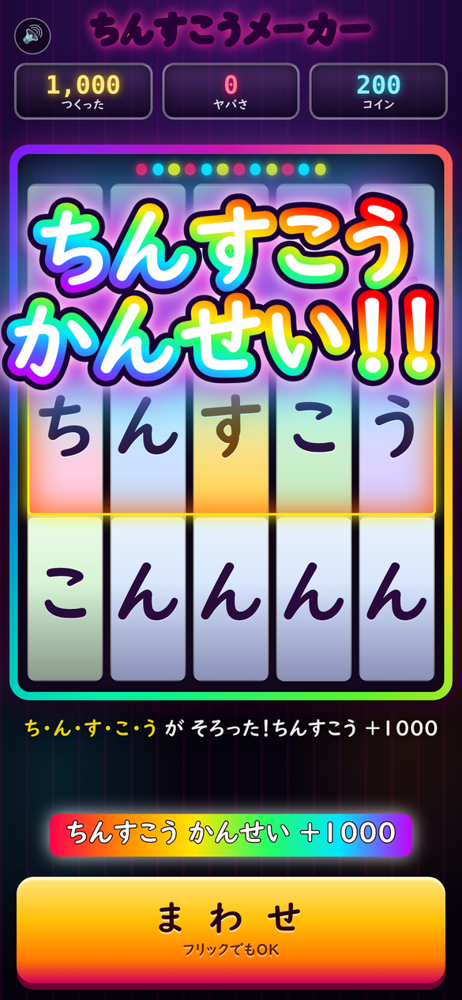
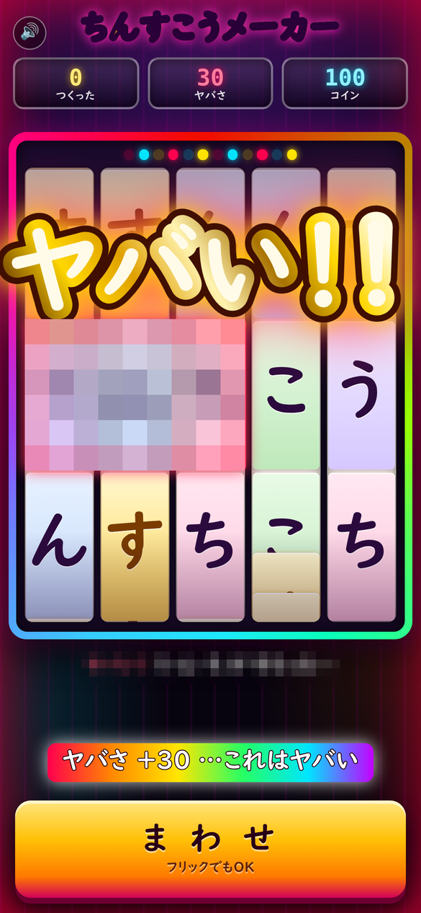

ちんすこうメーカー
ち・ん・す・こ・う を そろえろ！
5つのリールは 「ち・ん・す・こ・う」の5文字だけ。5文字が並んで「ちんすこう」になるとレインボーの大当たり、 危うい言葉が揃うと金縁の大文字で「ヤバい！！」。 スマホは「ブラウザで あそぶ」でそのまま遊べます（タップ／上下フリック）。 APKは端末に入れて遊ぶ版で、インストール時に「提供元不明のアプリ」の許可が必要です（Android 8.0以上）。 APKは リリース一覧 から最新版をどうぞ。
スクリーンショット




あそびかた
- リールを上下にフリックで回転（回転中のタップで左から順に停止＝目押し）。下の「ま わ せ」ボタンでも回せます
- ちんすこうが揃うとレインボーの大当たり（+1000 ／ コイン +20）
- 危うい言葉が揃うと金縁の大文字で「ヤバい！！」（5文字は「ちょうヤバい!!!!!」の超演出）
- コインは「あと何回まわせるか」の資源（1回転 -6）。0になるとゲームオーバーですが、 「もういっかい あそぶ」1タップで復帰でき、つくった数・ヤバさ・ランク・たっせいは消えません
- つくった数とヤバさにはマイルストーン演出、つくった数でランク（みならい→せんぱい→…→でんせつ）が上がります
- 当たりが続くとれんチャン表示。5連・10連で追加演出
つくり
- 中身はHTML5 一枚もの（
web/index.html）を WebView で包んだだけのAndroidアプリ。依存ライブラリなし・APK 約85KB - ビルドは Gradle なし（
aapt2 → javac → d8 → zipalign → apksigner／app/build.sh） - 対応: Android 8.0（API 26）以上 ／ パッケージ
com.tsubota.chinsuko - ライセンス: MIT（LICENSE）